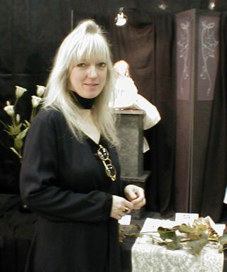
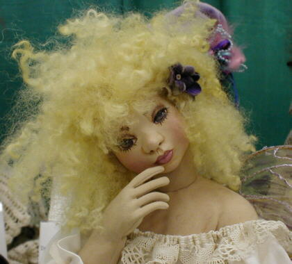
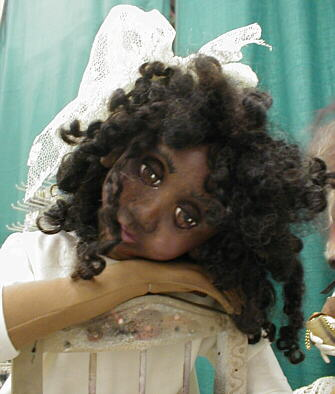
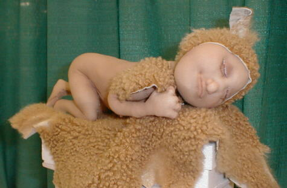
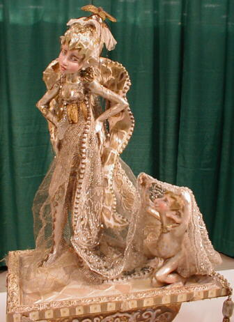

Santa Fe 2000 Doll Show - Page 5


Did you recognize Monica, herself? She is as beautiful as her dolls.

One of Sherry Goshon's darlings. She is cloth over polymer clay.

Another of Sherry's dolls, with a pensive look.

This darling needlesculpted baby was made by Jennie Cooley.

Marilyn Radzats' incredible "Fairy Wedding".